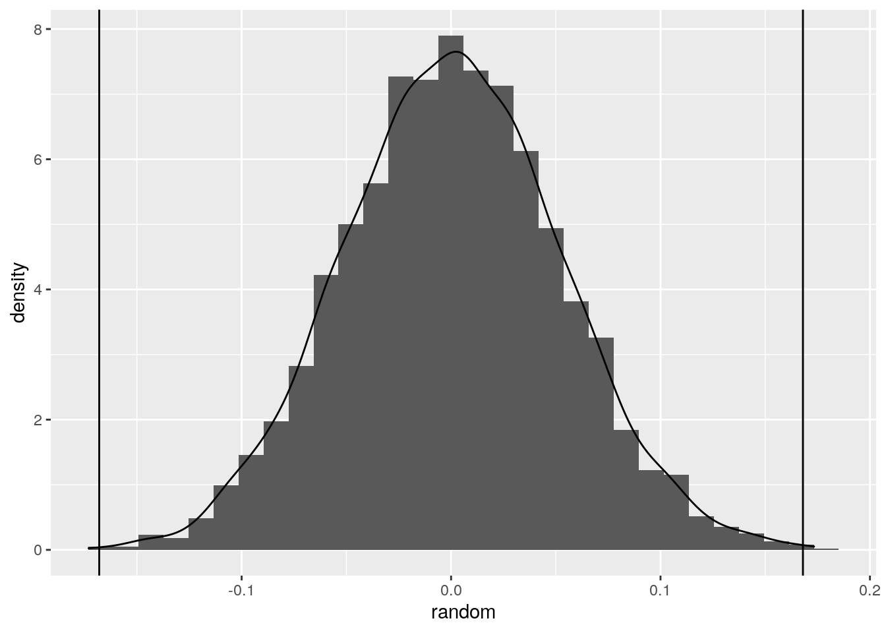
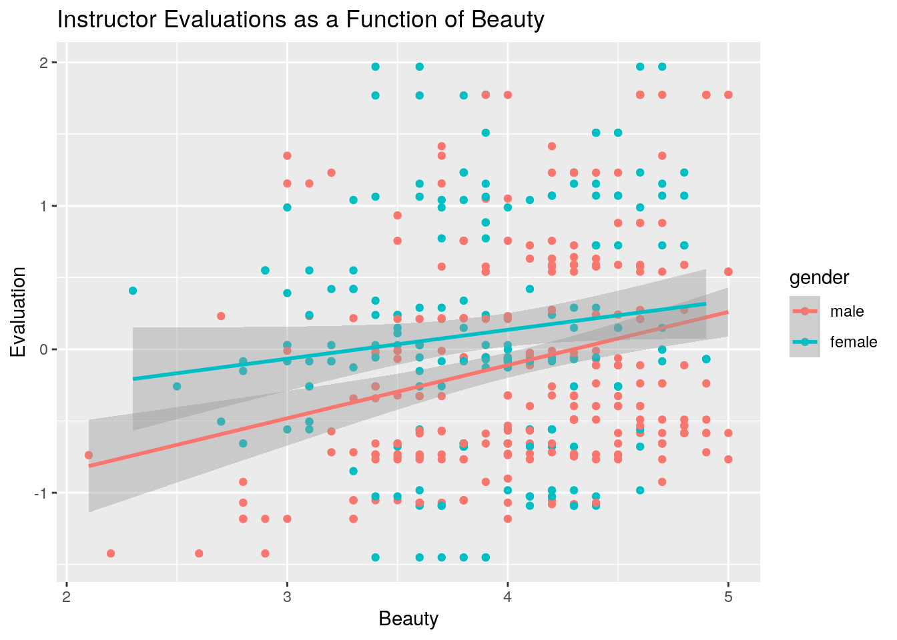
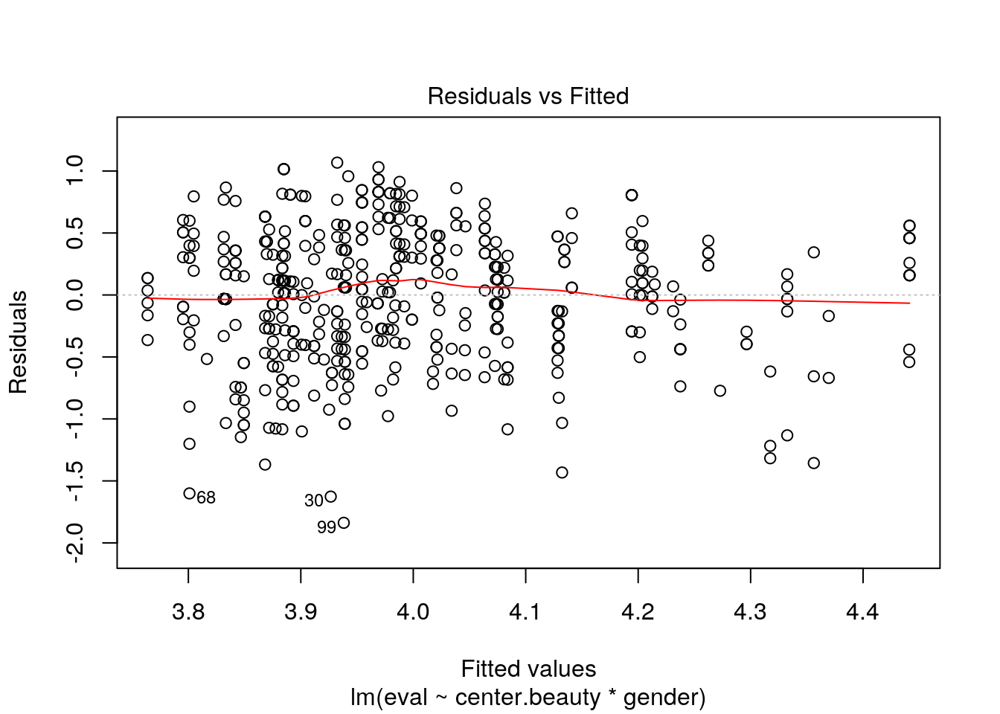
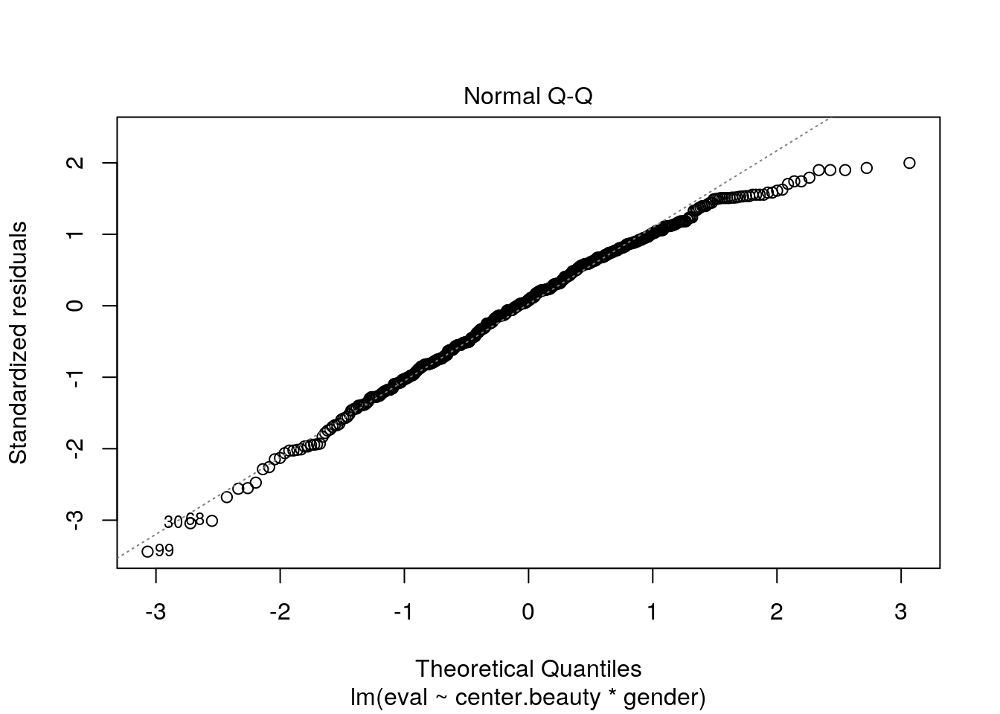
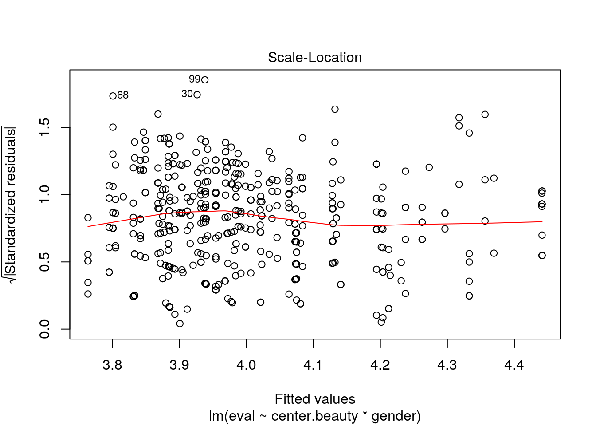
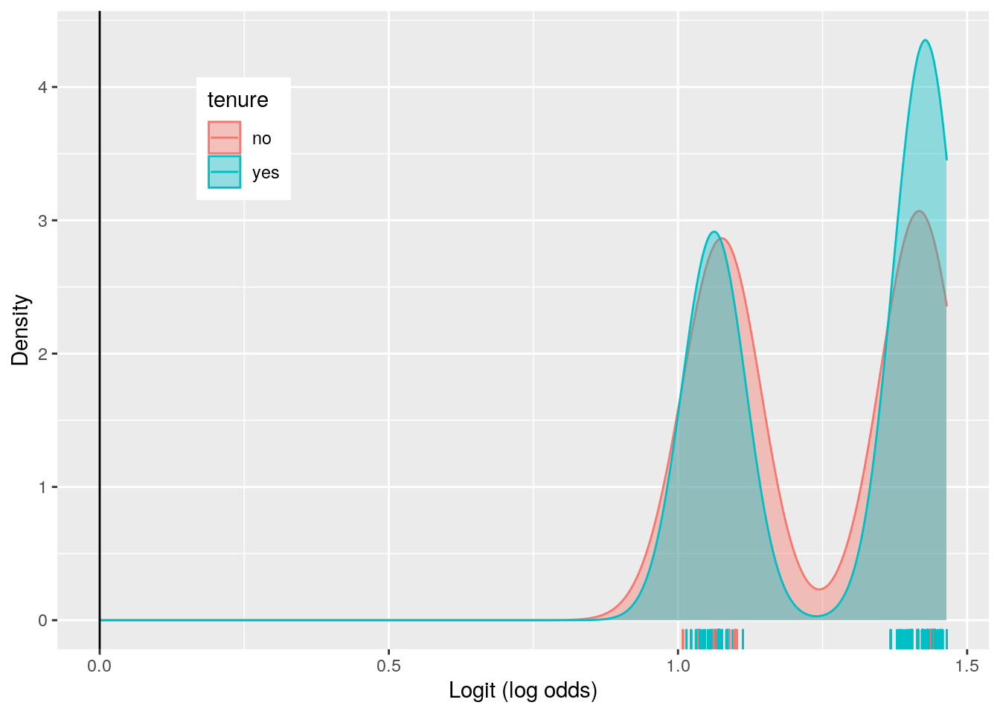
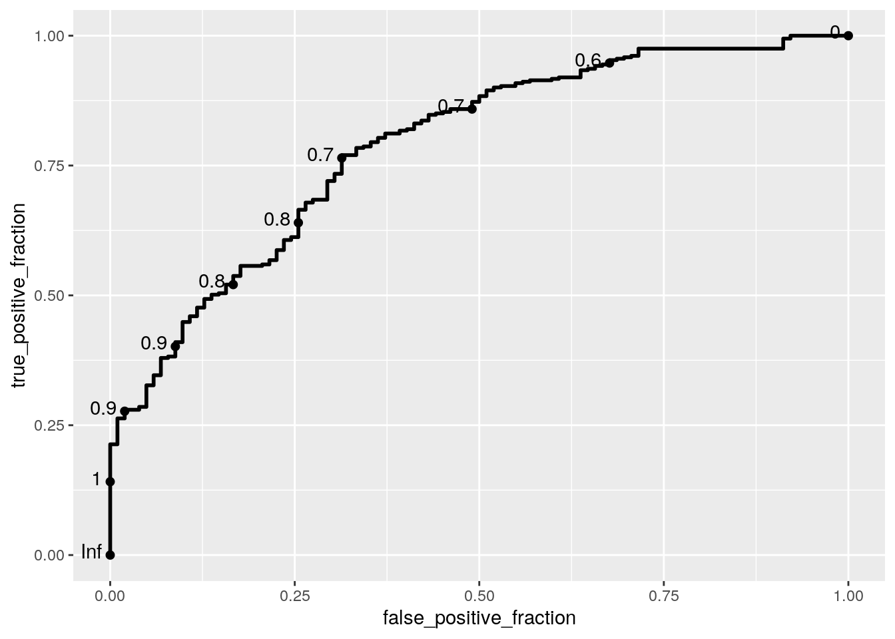
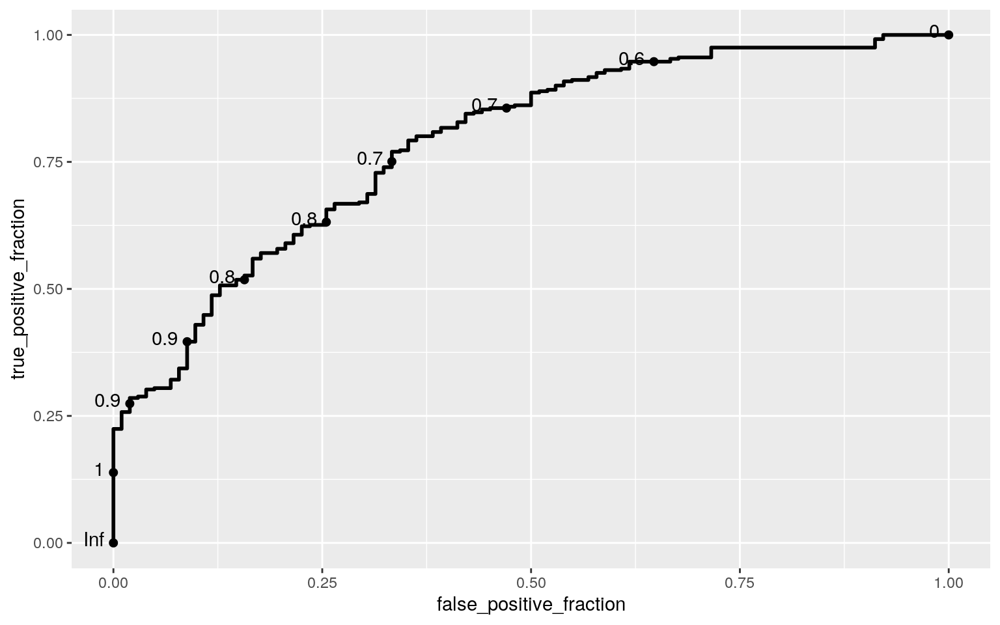

From the academic years of 2000-2002, the University of Texas at Austin collected data to analyze the connection between different course evaluations to the ratings of beauty for its instructors. This dataset includes 12 variables with 463 observations. For the numeric variables, the dataset recorded the age of the instructions as “age”, the averaged rating (in which the mean was set to zero) by a panel of six students of the instructor’s physical appearance as “beauty”, the evaluation score for the course (on a scale of 1-5, meaning low to high) as “eval”, how many students participated in the evaluation as “students”, and the total number of students enrolled in the course as “allstudents”. For categorical variables, whether or not the instructor was apart of a minority race was listed under the variable “minority”, the gender of the instructor was listed under “gender”, whether the course was a single-credit elective was listed under “credit”, whether the course was upper or lower division level was listed under “division”, whether the instructor was a native English speaker was listed under “native”, whether the instructor was on tenure track was listed under “tenure”, and the assigned instructor ID number for the dataset was listed under “prof”. I anticipate that beauty will cause a significant effect on evaluation scores, especially when accounting for gender. I am also interested in exploring the significance effect of beauty on other categorical variables like tenure.
data("TeachingRatings", package = "AER")I wanted to investigate if there was a significant difference (based on gender) between means of evaluation score, means of age, means of beauty scoring, means of number for students filling out the survey, and means of total number of students enrolled in the course.
For this MANOVA test, it is unlikely that all assumptions were met. However, I did test the multivariate normality assumption and the homogeneity of covariance assumption. For both tests, the p-value was below 0.5. Hence, I rejected the null hypothesis that these assumptions were met.
With the results of the MANOVA, I conclude that gender indeed has a significant effect on the numeric variables. This was determined by comparing the p-values to the alpha value of 0.5. Thus, I performed a univariate ANOVA tests for the numeric variables. With the according results, I found gender once again had a significant effect on all the numeric variables, with p-values lower than alpha. With these significant variables, I ran 5 pairwise t-tests, which again reflected the significant difference between the means of the two genders.
Since a total of 11 tests werre performed, the significance level needed to be corrected. Adjusting the alpha value for the 11 tests performed, there is a 0.4311999 probability of a Type I error occurring. Additionally, the boneferroni adjusted significance level is 0.004545455 so that the overall Type I error stays at 0.05. Despite this corrected significance level, all mean differences remained significant.
manova <- manova(cbind(eval, age, beauty, students, allstudents) ~
gender, data = TeachingRatings)
summary(manova)## Df Pillai approx F num Df den Df Pr(>F)
## gender 1 0.13946 14.812 5 457 1.769e-13 ***
## Residuals 461
## ---
## Signif. codes: 0 '***' 0.001 '**' 0.01 '*' 0.05 '.' 0.1 ' ' 1summary.aov(manova)## Response eval :
## Df Sum Sq Mean Sq F value Pr(>F)
## gender 1 3.186 3.1859 10.562 0.001239 **
## Residuals 461 139.053 0.3016
## ---
## Signif. codes: 0 '***' 0.001 '**' 0.01 '*' 0.05 '.' 0.1 ' ' 1
##
## Response age :
## Df Sum Sq Mean Sq F value Pr(>F)
## gender 1 3608 3608.2 40.782 4.16e-10 ***
## Residuals 461 40787 88.5
## ---
## Signif. codes: 0 '***' 0.001 '**' 0.01 '*' 0.05 '.' 0.1 ' ' 1
##
## Response beauty :
## Df Sum Sq Mean Sq F value Pr(>F)
## gender 1 4.542 4.5416 7.4033 0.006757 **
## Residuals 461 282.806 0.6135
## ---
## Signif. codes: 0 '***' 0.001 '**' 0.01 '*' 0.05 '.' 0.1 ' ' 1
##
## Response students :
## Df Sum Sq Mean Sq F value Pr(>F)
## gender 1 9725 9725.2 4.8385 0.02833 *
## Residuals 461 926593 2010.0
## ---
## Signif. codes: 0 '***' 0.001 '**' 0.01 '*' 0.05 '.' 0.1 ' ' 1
##
## Response allstudents :
## Df Sum Sq Mean Sq F value Pr(>F)
## gender 1 41050 41050 7.3843 0.006827 **
## Residuals 461 2562748 5559
## ---
## Signif. codes: 0 '***' 0.001 '**' 0.01 '*' 0.05 '.' 0.1 ' ' 1library(rstatix)
group <- TeachingRatings$gender
DVs <- TeachingRatings %>% select(eval, age, beauty, students,
allstudents)
sapply(split(DVs, group), mshapiro_test)## male female
## statistic 0.5689227 0.6942881
## p.value 2.879406e-25 1.301138e-18box_m(DVs, group)## # A tibble: 1 x 4
## statistic p.value parameter method
## <dbl> <dbl> <dbl> <chr>
## 1 261. 5.32e-47 15 Box's M-test for Homogeneity of Covariance Matri…library(dplyr)
library(ggplot2)
group <- TeachingRatings %>% group_by(gender) %>% summarise(mean(eval),
mean(age), mean(beauty), mean(students), mean(allstudents))
group## # A tibble: 2 x 6
## gender `mean(eval)` `mean(age)` `mean(beauty)` `mean(students)`
## <fct> <dbl> <dbl> <dbl> <dbl>
## 1 male 4.07 50.7 -0.0845 40.5
## 2 female 3.90 45.1 0.116 31.3
## # … with 1 more variable: `mean(allstudents)` <dbl>pairwise.t.test(TeachingRatings$eval, TeachingRatings$gender,
p.adj = "none")##
## Pairwise comparisons using t tests with pooled SD
##
## data: TeachingRatings$eval and TeachingRatings$gender
##
## male
## female 0.0012
##
## P value adjustment method: nonepairwise.t.test(TeachingRatings$age, TeachingRatings$gender,
p.adj = "none")##
## Pairwise comparisons using t tests with pooled SD
##
## data: TeachingRatings$age and TeachingRatings$gender
##
## male
## female 4.2e-10
##
## P value adjustment method: nonepairwise.t.test(TeachingRatings$beauty, TeachingRatings$gender,
p.adj = "none")##
## Pairwise comparisons using t tests with pooled SD
##
## data: TeachingRatings$beauty and TeachingRatings$gender
##
## male
## female 0.0068
##
## P value adjustment method: nonepairwise.t.test(TeachingRatings$students, TeachingRatings$gender,
p.adj = "none")##
## Pairwise comparisons using t tests with pooled SD
##
## data: TeachingRatings$students and TeachingRatings$gender
##
## male
## female 0.028
##
## P value adjustment method: nonepairwise.t.test(TeachingRatings$allstudents, TeachingRatings$gender,
p.adj = "none")##
## Pairwise comparisons using t tests with pooled SD
##
## data: TeachingRatings$allstudents and TeachingRatings$gender
##
## male
## female 0.0068
##
## P value adjustment method: none1 - (0.95^11)## [1] 0.43119990.05/11## [1] 0.004545455Null Hypothesis: The evaluation of a female instructor do not significantly differ from the evaluation of a male instructor.
Alternative Hypothesis: The evaluation of a female instructor do indeed significantly differ from the evaluation of a male instructor.
I chose to test for the mean difference between the groups in order to determine if gender can predict evaluations. By manually computing the mean difference, I was able to compare the results to a Welch Two Sample t-test. The t-test value (0.168004) aligned with the value computed manually. Calculating the p-value shows probability of observing a mean difference as extreme as the one observed under randomization distribution. The p-value is 8e-04, so we can draw the conclusion that both sexes have a significant difference between their evaluations.
set.seed(348)
random <- vector()
for (i in 1:5000) {
rand.dat <- data.frame(eval = sample(TeachingRatings$eval),
gender = TeachingRatings$gender)
random[i] <- mean(rand.dat[rand.dat$gender == "male", ]$eval) -
mean(rand.dat[rand.dat$gender == "female", ]$eval)
}
TeachingRatings %>% group_by(gender) %>% summarize(means = mean(eval)) %>%
summarize(mean.diff = diff(means))## # A tibble: 1 x 1
## mean.diff
## <dbl>
## 1 -0.168mean(random > 0.1680042 | random < -0.1680042)## [1] 8e-04t.test(eval ~ gender, data = TeachingRatings)##
## Welch Two Sample t-test
##
## data: eval by gender
## t = 3.2667, df = 425.76, p-value = 0.001176
## alternative hypothesis: true difference in means is not equal to 0
## 95 percent confidence interval:
## 0.06691754 0.26909088
## sample estimates:
## mean in group male mean in group female
## 4.069030 3.9010264.06903 - 3.901026## [1] 0.168004data.frame(random) %>% ggplot(aes(random)) + geom_histogram(aes(y = ..density..)) +
geom_density() + geom_vline(xintercept = 0.1680042) + geom_vline(xintercept = -0.1680042)
Null Hypothesis (1): When controlling for the effect of gender, beauty does not have a significant effect on the evaluation for the instructor.
Null Hypothesis (2): When controlling for the effect of beauty, gender does not have a significant effect on the evaluation for the instructor.
My linear regression equation resulted as follows: evaluation = 4.085949 + 0.200274(center.beauty) - 0.195097(genderfemale) - 0.112658(center.beauty*genderfemale)
Since the beauty rating is numeric, I centered the variable around its mean. Controlling for gender, an instructor will have evaluation scores 0.200274 points higher for every 1 unit increase in beauty rating. Controlling for beauty, evaluation scores are 0.195097 points lower for female instructors as oppose to males on average. The predicted evaluation score for an average beauty rating and a male instructor is 4.085949. Thus, gender and beauty account for 6.65% of the variation in instructor evaluations.
Checking assumption of linearity, normality, and homoskedasticity graphically, all assumptions have been fulfilled by the regression data except for homoskedasticity since it has an unequal spread.
When recomputing the regression results with robust standard errors, the coefficient estimates were distinctly similar to the previous results. Additionally, the significance of the results remained the same. For both models, the effects of beauty and gender were separately significant to the results of evaluation. However, the interaction between beauty and gender was not significant in providing an effect on evaluation.
TeachingRatings <- TeachingRatings %>% mutate(center.beauty = beauty -
mean(beauty, na.rm = T))
fit <- lm(eval ~ center.beauty * gender, data = TeachingRatings)
summary(fit)##
## Call:
## lm(formula = eval ~ center.beauty * gender, data = TeachingRatings)
##
## Residuals:
## Min 1Q Median 3Q Max
## -1.83820 -0.37387 0.04551 0.39876 1.06764
##
## Coefficients:
## Estimate Std. Error t value Pr(>|t|)
## (Intercept) 4.08595 0.03295 123.999 < 2e-16 ***
## center.beauty 0.20027 0.04333 4.622 4.95e-06 ***
## genderfemale -0.19510 0.05089 -3.834 0.000144 ***
## center.beauty:genderfemale -0.11266 0.06398 -1.761 0.078910 .
## ---
## Signif. codes: 0 '***' 0.001 '**' 0.01 '*' 0.05 '.' 0.1 ' ' 1
##
## Residual standard error: 0.5361 on 459 degrees of freedom
## Multiple R-squared: 0.07256, Adjusted R-squared: 0.0665
## F-statistic: 11.97 on 3 and 459 DF, p-value: 1.47e-07TeachingRatings %>% select(eval, center.beauty, gender) %>% na.omit %>%
ggplot(aes(eval, center.beauty, color = gender)) + geom_point() +
geom_smooth(method = "lm") + ggtitle("Instructor Evaluations as a Function of Beauty") +
xlab("Beauty") + ylab("Evaluation")
plot(fit, 1)
plot(fit, 2)
plot(fit, 3)
library(lmtest)
library(sandwich)
bptest(fit)##
## studentized Breusch-Pagan test
##
## data: fit
## BP = 4.9736, df = 3, p-value = 0.1737coeftest(fit, vcov = vcovHC(fit))##
## t test of coefficients:
##
## Estimate Std. Error t value Pr(>|t|)
## (Intercept) 4.085949 0.032532 125.5961 < 2.2e-16 ***
## center.beauty 0.200274 0.047910 4.1802 3.489e-05 ***
## genderfemale -0.195097 0.050329 -3.8765 0.0001214 ***
## center.beauty:genderfemale -0.112658 0.063054 -1.7867 0.0746467 .
## ---
## Signif. codes: 0 '***' 0.001 '**' 0.01 '*' 0.05 '.' 0.1 ' ' 1When resampling observations to compute bootstrapped standard errors, the standard errors remain very close in value to the original SEs and the robust SEs. When resampling residuals, the results were also consistent.
set.seed(348)
samp_distn <- replicate(5000, {
boot_dat <- sample_frac(TeachingRatings, replace = T)
fit2 <- lm(eval ~ center.beauty * gender, data = boot_dat)
coef(fit2)
})
samp_distn %>% t %>% as.data.frame %>% summarize_all(sd)## (Intercept) center.beauty genderfemale center.beauty:genderfemale
## 1 0.03249254 0.04744508 0.05077026 0.06118904resids <- fit$residuals
fitted <- fit$fitted.values
resid_resamp <- replicate(5000, {
new_resids <- sample(resids, replace = TRUE)
TeachingRatings$new_y <- fitted + new_resids
fit3 <- lm(new_y ~ center.beauty * gender, data = TeachingRatings)
coef(fit3)
})
resid_resamp %>% t %>% as.data.frame %>% summarize_all(sd)## (Intercept) center.beauty genderfemale center.beauty:genderfemale
## 1 0.03280723 0.04379814 0.05037285 0.06421757The odds of an instructor having tenure decreased by 0.4005 times if the instructor was female as oppose to male, however this effect to predict odds was not significant with a p-value of 0.120. The odds of an instructor having tenure increase by 0.5502 times for every 1 unit increase in the beauty rating, however this effect also was not significant with a p-value of 0.832.
Noteworthy, when creating a confusion matrix for the logistic regression, the model did not create any predictions for instructors without tenure aka the negative condition. Thus, the Specificity (TNR) could not calculated. The Accuracy (ACC) of this model was calculated to be 0.7796976. The Precision (PPV) was found to be the same value at 0.7796976. Finally, the Sensitivity (TPR) was calculated to be a value of 1. This is because all the true classifications of tenure were predicted correctly by the model where no negative conditions were predicted. Thus, this model has fair accuracy and precision, but it is excellent at predicting accurate positive outcomes.
TeachingRatings1 <- TeachingRatings %>% mutate(y = ifelse(tenure ==
"yes", 1, 0))
fit.combo <- glm(y ~ gender + center.beauty, data = TeachingRatings1,
family = "binomial")
summary(fit.combo)##
## Call:
## glm(formula = y ~ gender + center.beauty, family = "binomial",
## data = TeachingRatings1)
##
## Deviance Residuals:
## Min 1Q Median 3Q Max
## -1.8177 0.6480 0.6565 0.7659 0.7866
##
## Coefficients:
## Estimate Std. Error z value Pr(>|z|)
## (Intercept) 1.42163 0.15483 9.182 <2e-16 ***
## genderfemale -0.35325 0.22711 -1.555 0.120
## center.beauty -0.03032 0.14289 -0.212 0.832
## ---
## Signif. codes: 0 '***' 0.001 '**' 0.01 '*' 0.05 '.' 0.1 ' ' 1
##
## (Dispersion parameter for binomial family taken to be 1)
##
## Null deviance: 488.27 on 462 degrees of freedom
## Residual deviance: 485.69 on 460 degrees of freedom
## AIC: 491.69
##
## Number of Fisher Scoring iterations: 4exp(coef(fit.combo))## (Intercept) genderfemale center.beauty
## 4.1438868 0.7023983 0.9701388TeachingRatings1$probs <- predict(fit.combo, type = "response")
table(predict = as.numeric(TeachingRatings1$probs > 0.5), truth = TeachingRatings1$tenure) %>%
addmargins## truth
## predict no yes Sum
## 1 102 361 463
## Sum 102 361 463# ACC
361/463## [1] 0.7796976# TNR does not exist
# TPR
361/361## [1] 1# PPV
361/463## [1] 0.7796976TeachingRatings1$logit <- predict(fit.combo, type = "link")
TeachingRatings1 %>% ggplot() + geom_density(aes(TeachingRatings1$logit,
color = tenure, fill = tenure), alpha = 0.4) + theme(legend.position = c(0.2,
0.8)) + geom_vline(xintercept = 0) + xlab("Logit (log odds)") +
ylab("Density") + geom_rug(aes(TeachingRatings1$logit, color = tenure))
Using the “class_diag” function, AUC was calculated to be 0.7874369. This value was confirmed when calculating for AUC through the ROC curve. AUC illustrates how well the model can differentiate between the two outcomes. Since the calculated AUC is within 0.7-0.8, I have concluded that my model has fair test performance.
Through the “class_diag” function, the Accuracy (ACC) of the model increased to 0.8207343. The Sensitivity (TPR) decreased to 0.9750693. The Specificity (TNR) could be calculated and was found to be 0.2745098. The Precision (PPV) increased to 0.8262911. Due to the tradeoff between true positives and true negatives, Sensitivity decreased as Speficity increased.
library(knitr)
opts_chunk$set(fig.align = "center", fig.height = 5, message = FALSE,
warning = FALSE, fig.width = 8, tidy.opts = list(width.cutoff = 60),
tidy = TRUE)
class_diag <- function(probs, truth) {
# CONFUSION MATRIX: CALCULATE ACCURACY, TPR, TNR, PPV
if (is.character(truth) == TRUE)
truth <- as.factor(truth)
if (is.numeric(truth) == FALSE & is.logical(truth) == FALSE)
truth <- as.numeric(truth) - 1
tab <- table(factor(probs > 0.5, levels = c("FALSE", "TRUE")),
factor(truth, levels = c(0, 1)))
acc = sum(diag(tab))/sum(tab)
sens = tab[2, 2]/colSums(tab)[2]
spec = tab[1, 1]/colSums(tab)[1]
ppv = tab[2, 2]/rowSums(tab)[2]
# CALCULATE EXACT AUC
ord <- order(probs, decreasing = TRUE)
probs <- probs[ord]
truth <- truth[ord]
TPR = cumsum(truth)/max(1, sum(truth))
FPR = cumsum(!truth)/max(1, sum(!truth))
dup <- c(probs[-1] >= probs[-length(probs)], FALSE)
TPR <- c(0, TPR[!dup], 1)
FPR <- c(0, FPR[!dup], 1)
n <- length(TPR)
auc <- sum(((TPR[-1] + TPR[-n])/2) * (FPR[-1] - FPR[-n]))
data.frame(acc, sens, spec, ppv, auc)
}
TeachingRatings2 <- TeachingRatings1 %>% select(-tenure, -probs,
-logit, -prof)
fit.leng <- glm(y ~ ., data = TeachingRatings2, family = "binomial")
coef(fit.leng)## (Intercept) minorityyes age genderfemale creditssingle
## 5.29903758 1.72165486 -0.05714248 -0.97083002 -2.87891405
## beauty eval divisionlower nativeno students
## -0.27651449 -0.23129321 -0.63024366 16.15400496 -0.01438615
## allstudents center.beauty
## 0.01775143 NAsummary(fit.leng)##
## Call:
## glm(formula = y ~ ., family = "binomial", data = TeachingRatings2)
##
## Deviance Residuals:
## Min 1Q Median 3Q Max
## -2.3338 0.0001 0.4732 0.7079 1.8331
##
## Coefficients: (1 not defined because of singularities)
## Estimate Std. Error z value Pr(>|z|)
## (Intercept) 5.29904 1.45524 3.641 0.000271 ***
## minorityyes 1.72165 0.55395 3.108 0.001884 **
## age -0.05714 0.01561 -3.660 0.000252 ***
## genderfemale -0.97083 0.29362 -3.306 0.000945 ***
## creditssingle -2.87891 0.64549 -4.460 8.19e-06 ***
## beauty -0.27651 0.16810 -1.645 0.099973 .
## eval -0.23129 0.24795 -0.933 0.350920
## divisionlower -0.63024 0.28936 -2.178 0.029403 *
## nativeno 16.15400 642.14703 0.025 0.979930
## students -0.01439 0.01825 -0.788 0.430466
## allstudents 0.01775 0.01158 1.533 0.125328
## center.beauty NA NA NA NA
## ---
## Signif. codes: 0 '***' 0.001 '**' 0.01 '*' 0.05 '.' 0.1 ' ' 1
##
## (Dispersion parameter for binomial family taken to be 1)
##
## Null deviance: 488.27 on 462 degrees of freedom
## Residual deviance: 397.04 on 452 degrees of freedom
## AIC: 419.04
##
## Number of Fisher Scoring iterations: 16probs1 <- predict(fit.leng, type = "response")
class_diag(probs1, TeachingRatings2$y)## acc sens spec ppv auc
## 1 0.8207343 0.9750693 0.2745098 0.8262911 0.7874369library(plotROC)
ROC <- ggplot(TeachingRatings2) + geom_roc(aes(d = y, m = probs1,
n.cute = 0))
ROC
calc_auc(ROC)## PANEL group AUC
## 1 1 -1 0.7874369I next performed a logistic regression predicting the same binary response variable from the rest of my variables, except for the “prof” variable since it was only an identification number and the “students” variable since it only related to filling out the evaluation survey. Since some variables were numeric, I centered the variables around their means. All these results were significant except those for the beauty rating, the evaluation score, and whether the professor was a native English speaker. The odds of an instructor having tenure decreased by 0.980080 times if the gender of the instructor was female as opposed to male. The odds of an instructor having tenure increased by 1.705020 times if the instructor was a part of a minority race. The odds of an instructor having tenure decreased by 0.055245 times for every 1 year increase in the age of the instructor. The odds of an instructor having tenure decreased by 2.883801 times if their course was a single-credit elective. The odds of an instructor having tenure decreased by 0.290494 times for every 1 unit increase in the beauty rating. The odds of an instructor having tenure decreased by 0.255534 times for every 1 point increase in the evaluation score. The odds of an instructor having tenure decreased by 0.605185 times if their course was lower-division. The odds of an instructor having tenure increased by 16.152793 times if the instructor was not a native English speaker. The odds of an instructor having tenure increased by 0.009243 times for every 1 student increase in the total number of student enrolled in the course.
Using the “class_diag” function again, the Accuracy (ACC) of the model increased slightly to 0.8230342 from 0.8228942. The Sensitivity (TPR) decreased slightly to 0.9747187 from 0.9750693. The Specificity (TNR) increased to 0.306688 from 0.2843137. The Precision (PPV) decreased slightly to 0.8280068 from 0.8282353. When considering the tradeoff between Sensitivity and Specificity, this is a rational trend. When comparing to the AUC calculated from the ROC plot, it increased from the in-sample metrics of 0.7870295 to the out-of-sample metrics of 0.7991698. This shows a slight increase in test performance.
After performing LASSO, I concluded all the variables tested could be retained. Thus, the second logistic regression did need to be performed.
TeachingRatings1 <- TeachingRatings1 %>% mutate(center.beauty = beauty -
mean(beauty, na.rm = T))
TeachingRatings1 <- TeachingRatings1 %>% mutate(center.age = age -
mean(age, na.rm = T))
TeachingRatings1 <- TeachingRatings1 %>% mutate(center.eval = eval -
mean(eval, na.rm = T))
TeachingRatings1 <- TeachingRatings1 %>% mutate(center.allstudents = allstudents -
mean(allstudents, na.rm = T))
fit.all <- glm(formula = y ~ gender + minority + center.age +
credits + center.beauty + center.eval + division + native +
center.allstudents, family = binomial(link = "logit"), data = TeachingRatings1)
summary(fit.all)##
## Call:
## glm(formula = y ~ gender + minority + center.age + credits +
## center.beauty + center.eval + division + native + center.allstudents,
## family = binomial(link = "logit"), data = TeachingRatings1)
##
## Deviance Residuals:
## Min 1Q Median 3Q Max
## -2.32705 0.00011 0.47533 0.71427 1.82822
##
## Coefficients:
## Estimate Std. Error z value Pr(>|z|)
## (Intercept) 2.050493 0.237605 8.630 < 2e-16 ***
## genderfemale -0.980080 0.293900 -3.335 0.000854 ***
## minorityyes 1.705020 0.551794 3.090 0.002002 **
## center.age -0.055245 0.015294 -3.612 0.000304 ***
## creditssingle -2.883801 0.646336 -4.462 8.13e-06 ***
## center.beauty -0.290494 0.166989 -1.740 0.081929 .
## center.eval -0.255534 0.245625 -1.040 0.298181
## divisionlower -0.605185 0.287171 -2.107 0.035083 *
## nativeno 16.152793 642.046333 0.025 0.979929
## center.allstudents 0.009243 0.003460 2.671 0.007557 **
## ---
## Signif. codes: 0 '***' 0.001 '**' 0.01 '*' 0.05 '.' 0.1 ' ' 1
##
## (Dispersion parameter for binomial family taken to be 1)
##
## Null deviance: 488.27 on 462 degrees of freedom
## Residual deviance: 397.68 on 453 degrees of freedom
## AIC: 417.68
##
## Number of Fisher Scoring iterations: 16exp(coef(fit.all))## (Intercept) genderfemale minorityyes center.age
## 7.771731e+00 3.752810e-01 5.501498e+00 9.462536e-01
## creditssingle center.beauty center.eval divisionlower
## 5.592180e-02 7.478938e-01 7.745024e-01 5.459734e-01
## nativeno center.allstudents
## 1.035306e+07 1.009286e+00TeachingRatings1$probs2 <- predict(fit.all, type = "response")
table(predict = as.numeric(TeachingRatings1$probs2 > 0.5), truth = TeachingRatings1$tenure) %>%
addmargins## truth
## predict no yes Sum
## 0 29 9 38
## 1 73 352 425
## Sum 102 361 463# ACC
(29 + 352)/463## [1] 0.8228942# TNR
29/102## [1] 0.2843137# TPR
352/361## [1] 0.9750693# PPV
352/425## [1] 0.8282353ROC <- ggplot(TeachingRatings1) + geom_roc(aes(d = y, m = probs2,
n.cute = 0))
ROC
calc_auc(ROC)## PANEL group AUC
## 1 1 -1 0.7870295k = 10
data1 <- TeachingRatings1[sample(nrow(TeachingRatings1)), ]
folds <- cut(seq(1:nrow(TeachingRatings1)), breaks = k, labels = F)
diags <- NULL
for (i in 1:k) {
train <- data1[folds != i, ]
test <- data1[folds == i, ]
truth <- test$tenure
fit1 <- glm(tenure ~ ., data = train, family = "binomial")
prob <- predict(fit.all, newdata = test, type = "response")
diags <- rbind(diags, class_diag(prob, truth))
}
summarize_all(diags, mean)## acc sens spec ppv auc
## 1 0.8230342 0.9747187 0.306688 0.8280068 0.7991698library(glmnet)
set.seed(1234)
response <- as.matrix(TeachingRatings1$tenure)
explanatory <- model.matrix(fit.all)[, -1]
head(explanatory)## genderfemale minorityyes center.age creditssingle center.beauty center.eval
## 1 1 1 -12.365011 0 0.2899156 0.3017279
## 2 0 0 10.634989 0 -0.7377323 0.5017279
## 3 0 0 2.634989 0 -0.5719837 -0.2982721
## 4 1 0 -8.365011 0 -0.6779635 0.3017279
## 5 1 0 -17.365011 0 1.5097939 0.4017279
## 6 0 0 13.634989 0 0.5885686 0.2017279
## divisionlower nativeno center.allstudents
## 1 0 0 -12.1771058
## 2 0 0 -35.1771058
## 3 0 0 -0.1771058
## 4 0 0 -9.1771058
## 5 0 0 -7.1771058
## 6 0 0 226.8228942cv <- cv.glmnet(explanatory, response, family = "binomial")
lasso <- glmnet(explanatory, response, family = "binomial", lambda = cv$lambda.1se)
coef(lasso)## 10 x 1 sparse Matrix of class "dgCMatrix"
## s0
## (Intercept) 1.541717460
## genderfemale -0.314506656
## minorityyes 0.553136589
## center.age -0.019567422
## creditssingle -1.906695184
## center.beauty -0.027460000
## center.eval -0.082344113
## divisionlower -0.200436223
## nativeno 1.054836793
## center.allstudents 0.004168817